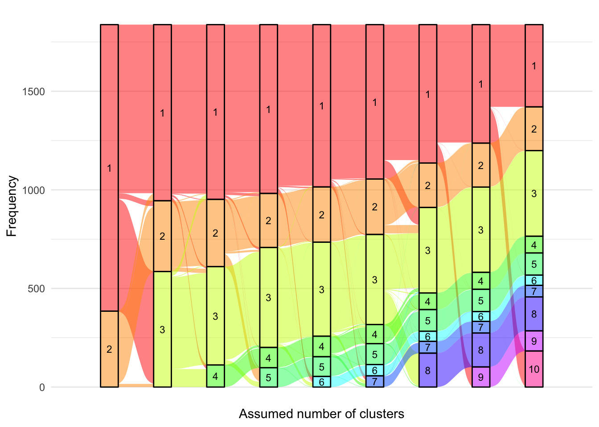
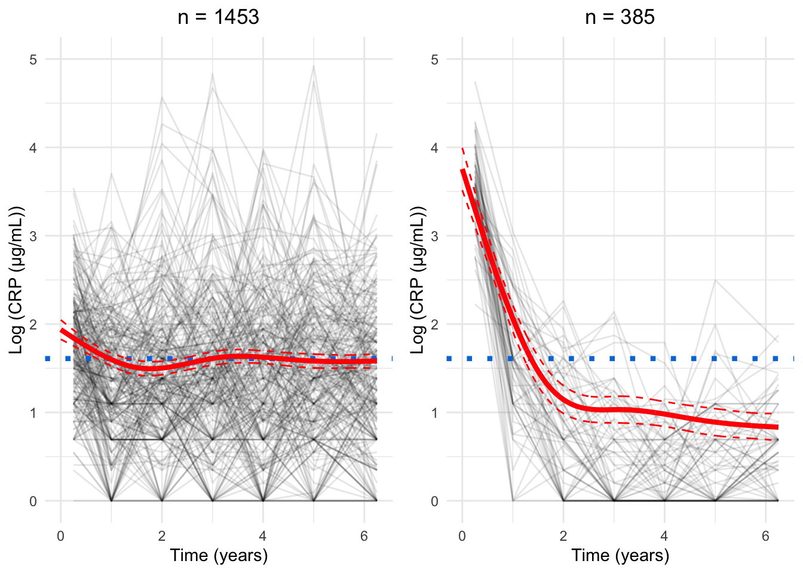
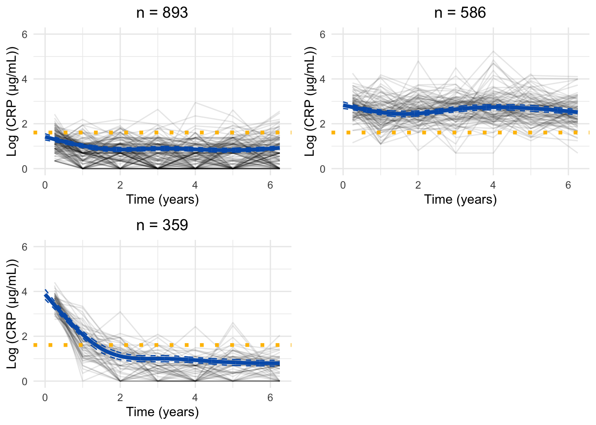
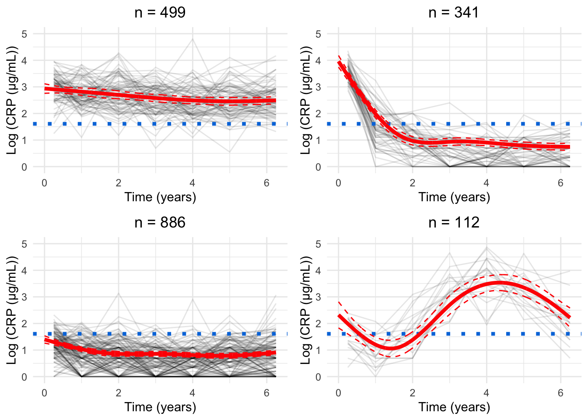
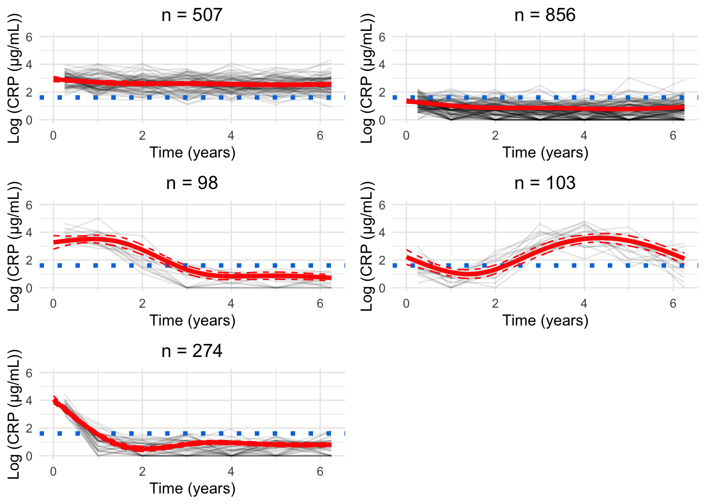
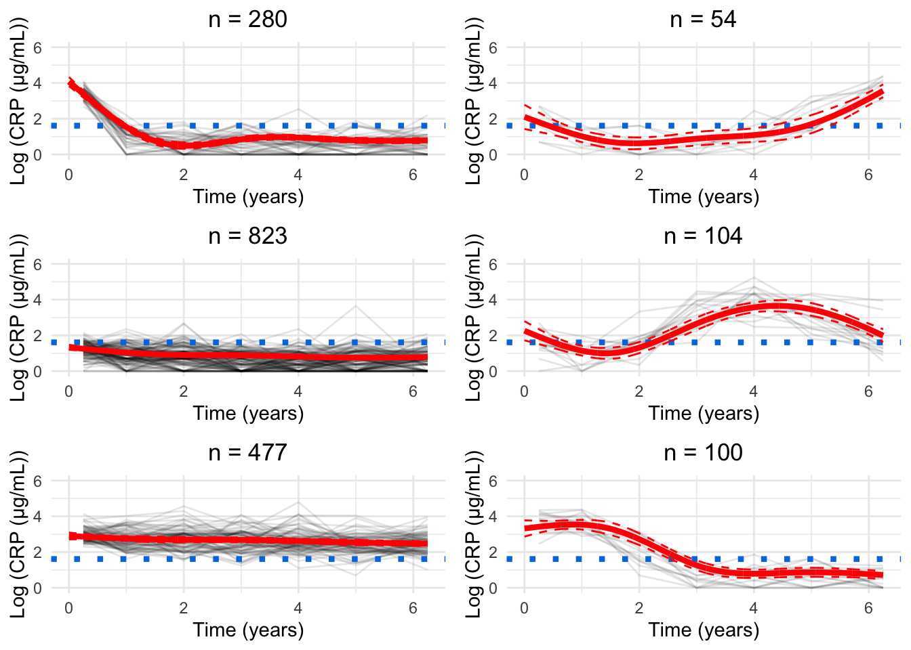
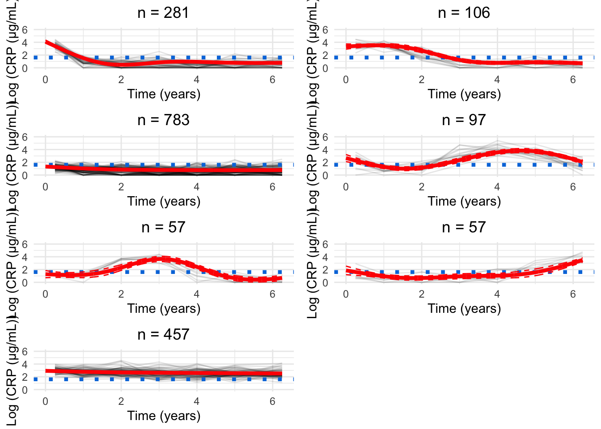
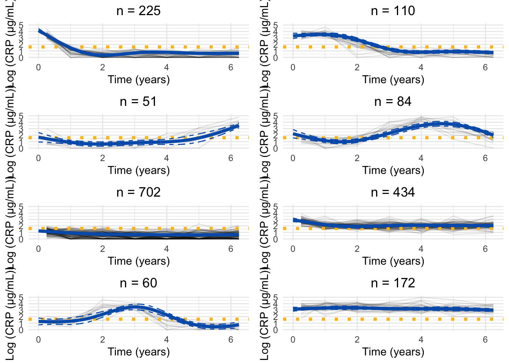
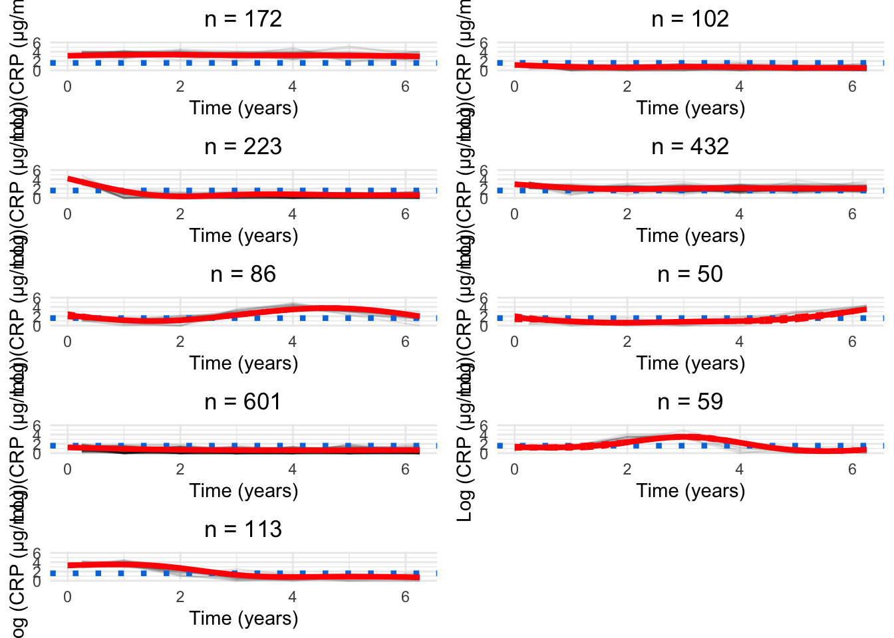
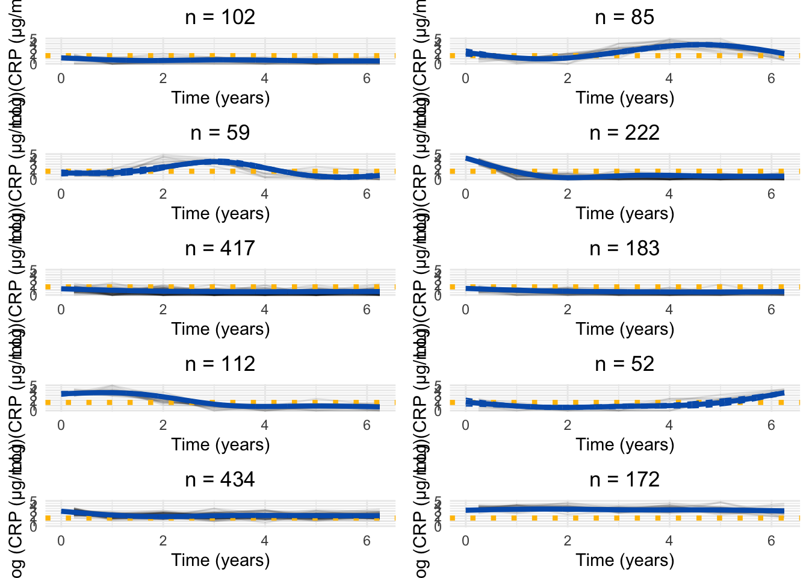

set.seed(123)if(file.exists("/.dockerenv")){# Check if running in Docker# Assume igmm/cvallejo-predicct/libdr/ is passed to the data volumeprefix<-"data/"}else{# Assume running outside of a Docker container and the IGC(/IGMM) datastore is# mounted at /Volumesprefix<-"/Volumes/igmm/cvallejo-predicct/libdr/"}###########################-- Packages --###########################library(tidyverse)# Support package (source found in libdr/)library(libdr)## Modelling ##library(lcmm)library(kml)# K-means## Presentation ##library(patchwork)library(ggdist)library(ggalluvial)library(pander)library(qqplotr)###########################-- Data read --##########################dict<-readRDS(paste0(prefix, "processed/dict.RDS"))crp_median<-readRDS(paste0(prefix, "processed/median-crp.RDS"))crp<-readRDS(paste0(prefix, "processed/crp.RDS"))dk.crp<-read.csv(paste0(prefix, "Denmark/2024-11-29/crp_8_models.csv"), sep =";")
Model selection
Code
# set the number of groupsG.crp<-numeric()models.crp.ma<-list()G.cands<-seq(2, 10)for(G.candinG.cands){file.name<-paste0(prefix, "/cache/crp-ma/crp-", G.cand, ".RDS")if(file.exists(file.name)){G.crp<-c(G.crp, G.cand)models.crp.ma[[G.cand]]<-readRDS(file.name)}}rm(G.cand)
Code
alluvial.df<-matrix(nrow =0, ncol =3)colnames(alluvial.df)<-c("ids", "class", "G")for(GinG.crp){alluvial.df<-rbind(alluvial.df, cbind(models.crp.ma[[G]]$pprob[, 1:2], G =G))}alluvial.df<-as.data.frame(alluvial.df)alluvial.df$ids<-as.character(alluvial.df$ids)alluvial.df$class<-as.factor(alluvial.df$class)alluvial.df[alluvial.df[, "G"]==3, "class"]<-plyr::mapvalues(alluvial.df[alluvial.df[, "G"]==3, "class"], from =c(seq(1, 3)), to =c(1, 2, 3))alluvial.df[alluvial.df[, "G"]==4, "class"]<-plyr::mapvalues(alluvial.df[alluvial.df[, "G"]==4, "class"], from =c(seq(1, 4)), to =c(3, 1, 2, 4))alluvial.df[alluvial.df[, "G"]==5, "class"]<-plyr::mapvalues(alluvial.df[alluvial.df[, "G"]==5, "class"], from =c(seq(1, 5)), to =c(3, 5, 2, 1, 4))alluvial.df[alluvial.df[, "G"]==6, "class"]<-plyr::mapvalues(alluvial.df[alluvial.df[, "G"]==6, "class"], from =c(seq(1, 6)), to =c(2, 1, 3, 6, 4, 5))alluvial.df[alluvial.df[, "G"]==7, "class"]<-plyr::mapvalues(alluvial.df[alluvial.df[, "G"]==7, "class"], from =c(seq(1, 7)), to =c(2, 1, 7, 3, 5, 4, 6))alluvial.df[alluvial.df[, "G"]==8, "class"]<-plyr::mapvalues(alluvial.df[alluvial.df[, "G"]==8, "class"], from =c(seq(1, 8)), to =c(2, 6, 1, 7, 5, 4, 3, 8))alluvial.df[alluvial.df[, "G"]==9, "class"]<-plyr::mapvalues(alluvial.df[alluvial.df[, "G"]==9, "class"], from =c(seq(1, 9)), to =c(8, 2, 4, 1, 5, 9, 3, 6, 7))alluvial.df[alluvial.df[, "G"]==10, "class"]<-plyr::mapvalues(alluvial.df[alluvial.df[, "G"]==10, "class"], from =c(seq(1, 10)), to =c(9, 7, 1, 5, 3, 4, 2, 10, 6, 8))# eliminate label switchingp<-ggplot(alluvial.df,aes( x =G, stratum =class, alluvium =ids, fill =class, label =class))+scale_x_discrete(expand =c(.1, .1))+geom_flow()+geom_stratum(alpha =0.5)+geom_text(stat ="stratum", size =3)+theme_minimal()+theme(legend.position ="none")+scale_fill_manual(values =rainbow(10))+xlab("Assumed number of clusters")+ylab("Frequency")print(p)for(formatinc("png", "pdf")){ggsave(paste0("plots/ma-nocor/alluvial.", format),p, width =12, height =6.75, units ="in")}

Figure 1: Alluvial plot of cluster membership across G for CRP
for(GinG.crp){# Data frame to hold processed datanew.crp<-data.frame( ids =numeric(), crp_result =numeric(), crp_time =numeric(), class =numeric())for(clustin1:G){ids.clust<-subset(models.crp.ma[[G]]$pprob, class==clust)$idsn.clust<-length(ids.clust)rand<-sample(n.clust, n.clust)# Randomise the order of the idsiters<-floor(n.clust/6)# How many groups of six are there?# Matrix to hold the smoothed datacrp.ma<-matrix(NA, nrow =iters, ncol =7)for(iin0:(iters-1)){# Find ids for group of fiveids.select<-ids.clust[rand[((i*6)+1):((i*6)+6)]]crp.subset<-subset(crp_median, ids%in%ids.select)# Median process as per CRP preprocessingfor(jinseq(0, 6)){if(j==6){sub.obs<-subset(crp.subset,crp_time>=j-0.5&crp_time<=j+1)}else{sub.obs<-subset(crp.subset,crp_time>=j-0.5&crp_time<j+0.5)}if(nrow(sub.obs)>0){crp.ma[i+1, j+1]<-median(sub.obs$crp_result)}}}rownames(crp.ma)<-1:iterscrp.ma<-reshape2::melt(t(crp.ma), id.vars =row.names(crp.ma), na.rm =TRUE)colnames(crp.ma)<-c("crp_time", "ids", "crp_result")crp.ma<-crp.ma[, c(2, 3, 1)]# Make ids first columncrp.ma$crp_time<-crp.ma$crp_time-1# Take into account uneven spacing at start and endcrp.ma$crp_time<-plyr::mapvalues(crp.ma$crp_time, from =c(0, 6), to =c(0.25, 6.25))crp.ma$class<-clust# Identify cluster assignmentnew.crp<-rbind(new.crp, crp.ma)}cairo_pdf(paste0("plots/spaghetti/crp-", G, ".pdf"), width =10, height =17.5)grid::grid.newpage()spaghettiPlot(new.crp,models.crp.ma,G, clusters =TRUE, tmax =6.25, sizes =TRUE, var.time ="crp_time", ylim ="data")invisible(dev.off())png(paste0("plots/spaghetti/crp-", G, ".png"), width =10, height =17.5, units ="in", res =300)grid::grid.newpage()spaghettiPlot(new.crp,models.crp.ma,G, clusters =TRUE, tmax =6.25, sizes =TRUE, var.time ="crp_time", ylim ="data")invisible(dev.off())grid::grid.newpage()spaghettiPlot(new.crp,models.crp.ma,G, clusters =TRUE, tmax =6.25, sizes =TRUE, var.time ="crp_time", ylim ="data")}









Chosen model
Code
new.crp<-data.frame( ids =numeric(), crp_result =numeric(), crp_time =numeric(), class =numeric())for(clustin1:8){ids.clust<-subset(models.crp.ma[[8]]$pprob, class==clust)$idsn.clust<-length(ids.clust)rand<-sample(n.clust, n.clust)# Randomise the order of the idsiters<-floor(n.clust/6)# How many groups of six are there?# Matrix to hold the smoothed datacrp.ma<-matrix(NA, nrow =iters, ncol =7)for(iin0:(iters-1)){# Find ids for group of fiveids.select<-ids.clust[rand[((i*6)+1):((i*6)+6)]]crp.subset<-subset(crp_median, ids%in%ids.select)# Median process as per CRP preprocessingfor(jinseq(0, 6)){if(j==6){sub.obs<-subset(crp.subset,crp_time>=j-0.5&crp_time<=j+1)}else{sub.obs<-subset(crp.subset,crp_time>=j-0.5&crp_time<j+0.5)}if(nrow(sub.obs)>0){crp.ma[i+1, j+1]<-median(sub.obs$crp_result)}}}rownames(crp.ma)<-1:iterscrp.ma<-reshape2::melt(t(crp.ma), id.vars =row.names(crp.ma), na.rm =TRUE)colnames(crp.ma)<-c("crp_time", "ids", "crp_result")crp.ma<-crp.ma[, c(2, 3, 1)]# Make ids first columncrp.ma$crp_time<-crp.ma$crp_time-1# Take into account uneven spacing at start and endcrp.ma$crp_time<-plyr::mapvalues(crp.ma$crp_time, from =c(0, 6), to =c(0.25, 6.25))crp.ma$class<-clust# Identify cluster assignmentnew.crp<-rbind(new.crp, crp.ma)}
Labelling
The labels/order of the clusters generated above are random. To improve the readability and assist with interpretation of associations, it would be beneficial to order clusters by some analogue for disease severity. This section explores possible solutions for this task.
Cumulative inflammation across follow-up
One possible solution is to order clusters by cumulative inflammation which is given by the area under the curve for each mean cluster trajectory.
Code
rank.full<-rankCumulative(models.crp.ma[[8]], tmax =6.25, var.time ="crp_time")rank.full%>%ggplot(aes(x =paste0("CRP", New), y =Area))+geom_bar(stat ="identity", fill ="#745C97", color ="#39375B")+ylab("Cumulative inflammation (Area)")+xlab("Cluster")+theme_minimal()
for(Ginc(7, 9)){new.crp<-data.frame( ids =numeric(), crp_result =numeric(), crp_time =numeric(), class =numeric())for(clustin1:G){ids.clust<-subset(models.crp.ma[[G]]$pprob, class==clust)$idsn.clust<-length(ids.clust)rand<-sample(n.clust, n.clust)# Randomise the order of the idsiters<-floor(n.clust/6)# How many groups of six are there?# Matrix to hold the smoothed datacrp.ma<-matrix(NA, nrow =iters, ncol =7)for(iin0:(iters-1)){# Find ids for group of fiveids.select<-ids.clust[rand[((i*6)+1):((i*6)+6)]]crp.subset<-subset(crp_median, ids%in%ids.select)# Median process as per CRP preprocessingfor(jinseq(0, 6)){if(j==6){sub.obs<-subset(crp.subset,crp_time>=j-0.5&crp_time<=j+1)}else{sub.obs<-subset(crp.subset,crp_time>=j-0.5&crp_time<j+0.5)}if(nrow(sub.obs)>0){crp.ma[i+1, j+1]<-median(sub.obs$crp_result)}}}rownames(crp.ma)<-1:iterscrp.ma<-reshape2::melt(t(crp.ma), id.vars =row.names(crp.ma), na.rm =TRUE)colnames(crp.ma)<-c("crp_time", "ids", "crp_result")crp.ma<-crp.ma[, c(2, 3, 1)]# Make ids first columncrp.ma$crp_time<-crp.ma$crp_time-1# Take into account uneven spacing at start and endcrp.ma$crp_time<-plyr::mapvalues(crp.ma$crp_time, from =c(0, 6), to =c(0.25, 6.25))crp.ma$class<-clust# Identify cluster assignmentnew.crp<-rbind(new.crp, crp.ma)}rank.full<-rankCumulative(models.crp.ma[[G]], tmax =6.25, var.time ="crp_time")png(paste0("plots/spaghetti/crp-ncs-reordered-", G, ".png"), width =10, height =16, units ="in", res =300)grid::grid.newpage()spaghettiPlot(new.crp,models.crp.ma, G =G, log =TRUE, tmax =6.25, sizes =TRUE, knots =FALSE, var.time ="crp_time", clusters =TRUE, ylim ="data", mapping =rank.full$Original)invisible(dev.off())cairo_pdf(paste0("plots/spaghetti/crp-ncs-reordered-", G, ".pdf"), width =10, height =16)grid::grid.newpage()spaghettiPlot(new.crp,models.crp.ma, G =G, log =TRUE, tmax =6.25, sizes =TRUE, knots =FALSE, var.time ="crp_time", clusters =TRUE, ylim ="data", mapping =rank.full$Original)invisible(dev.off())}
Alluvial anchored plot
Code
alluvial.df<-matrix(nrow =0, ncol =3)colnames(alluvial.df)<-c("ids", "class", "G")for(GinG.crp){alluvial.df<-rbind(alluvial.df, cbind(models.crp.ma[[G]]$pprob[, 1:2], G =G))}alluvial.df<-as.data.frame(alluvial.df)alluvial.df$ids<-as.character(alluvial.df$ids)alluvial.df$class<-as.factor(alluvial.df$class)alluvial.df[alluvial.df[, "G"]==2, "class"]<-plyr::mapvalues(alluvial.df[alluvial.df[, "G"]==2, "class"], from =c(1, 2), to =c(1, 2))alluvial.df[alluvial.df[, "G"]==3, "class"]<-plyr::mapvalues(alluvial.df[alluvial.df[, "G"]==3, "class"], from =c(seq(1, 3)), to =c(1, 2, 6))alluvial.df[alluvial.df[, "G"]==4, "class"]<-plyr::mapvalues(alluvial.df[alluvial.df[, "G"]==4, "class"], from =c(seq(1, 4)), to =c(6, 1, 2, 7))alluvial.df[alluvial.df[, "G"]==5, "class"]<-plyr::mapvalues(alluvial.df[alluvial.df[, "G"]==5, "class"], from =c(seq(1, 5)), to =c(6, 5, 2, 1, 7))alluvial.df[alluvial.df[, "G"]==6, "class"]<-plyr::mapvalues(alluvial.df[alluvial.df[, "G"]==6, "class"], from =c(seq(1, 6)), to =c(2, 1, 6, 3, 7, 5))alluvial.df[alluvial.df[, "G"]==7, "class"]<-plyr::mapvalues(alluvial.df[alluvial.df[, "G"]==7, "class"], from =c(seq(1, 7)), to =c(2, 1, 4, 6, 5, 7, 3))alluvial.df[alluvial.df[, "G"]==8, "class"]<-plyr::mapvalues(alluvial.df[alluvial.df[, "G"]==8, "class"], from =rank.full$Original, to =rank.full$New)alluvial.df[alluvial.df[, "G"]==9, "class"]<-plyr::mapvalues(alluvial.df[alluvial.df[, "G"]==9, "class"], from =c(seq(1, 9)), to =c(8, 2, 7, 1, 5, 9, 6, 3, 4))alluvial.df[alluvial.df[, "G"]==10, "class"]<-plyr::mapvalues(alluvial.df[alluvial.df[, "G"]==10, "class"], from =c(seq(1, 10)), to =c(9, 4, 1, 5, 6, 7, 2, 10, 3, 8))# eliminate label switchingp<-ggplot(alluvial.df,aes( x =G, stratum =class, alluvium =ids, fill =class, label =class))+scale_x_discrete(expand =c(.1, .1))+geom_flow()+geom_stratum(alpha =0.5)+geom_text(stat ="stratum", size =3)+theme_minimal()+theme(legend.position ="none")+scale_fill_manual(values =c(viridis::viridis(8), "#FFF282", "#F8F3C3"))+xlab("Assumed number of clusters")+ylab("Frequency")print(p)
 ##### G = 3
##### G = 3  ##### G = 4
##### G = 4  ##### G = 5
##### G = 5  ##### G = 6
##### G = 6  ##### G = 7
##### G = 7  ##### G = 8
##### G = 8  ##### G = 9
##### G = 9  ##### G = 10
##### G = 10